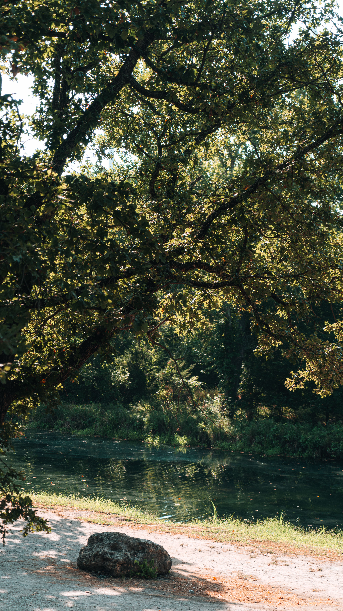

Nature includes everything around us, such as trees, animals, rivers, mountains, and the air we breathe. [1] (https://www.vedantu.com/english/nature-essay), [2] (https://www.youtube.com/watch?v=bEwh0kp8SjI&t=14)It is the foundation of life on Earth, providing us with clean water, food, and shelter while maintaining a delicate ecological balance. Because all living and non-living things are deeply interconnected, protecting the natural environment is essential for our survival and well-being. [1] (https://byjus.com/english/paragraph-on-nature/), [2] (https://www.youtube.com/watch?v=fm2gWY6dgFE&t=1), [3] (https://www.firstcry.com/intelli/articles/essay-on-nature-10-lines-short-and-long-essay-for-children /?srsltid=AfmBOor9j1rbDRZ9bV95kS4xmQm19QjnBhw_Bkq_IfcVdnOfVUJodWdc), [4] (https://www.scribd.com/document/907074624/Essay-on-Nature-PDF)Would you like me to focus this paragraph more on a specific theme (such as wildlife, environmental conservation, or seasonal changes)?
 |
Trees are essential living plants that help sustain life on Earth by producing oxygen and absorbing carbon dioxide.
[1] (https://www.youtube.com/watch?v=6AmLYAp8v1M&t=22),
[2] (https://www.firstcry.com/intelli/articles/essay-on-trees-10-lines-short-and-long-essay-for-kids/)They provide crucial benefits to the environment and everyday life:Fresh air: They clean the air by trapping harmful pollutants.Habitats: They offer food and shelter for many birds and animals.Resources: They supply useful materials like wood, fruit, and medicine.Soil protection: Their roots hold the ground together to prevent soil erosion. [1] (https://byjus.com/kids-learning/tree-essay/),
[2] (https://askfilo.com/user-question-answers-smart-solutions/write-a-paragraph-on-trees-are-our-best-friend-in-about-150-3336393236393835),
[3] (https://www.vedantu.com/english/save-trees-essay),
[4] (https://www.youtube.com/watch?v=6AmLYAp8v1M&t=22)
|